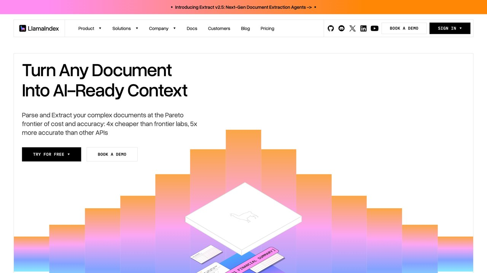
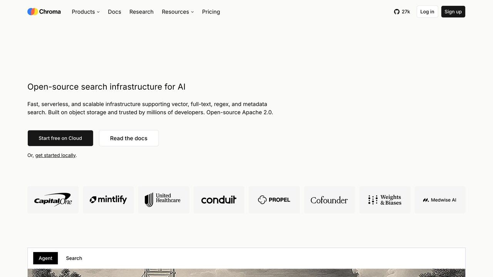

RAG (Retrieval-Augmented Generation, "generación aumentada por recuperación") es la técnica detrás de la mayoría de asistentes de IA que responden preguntas sobre documentos internos de una empresa, manuales, o tu propia base de conocimiento. Sin ella, un modelo solo sabe lo que aprendió en su entrenamiento; con ella, puede consultar información concreta y actual antes de responder, sin necesidad de reentrenar nada ni esperar a la siguiente versión del modelo para incorporar datos nuevos.
Aunque el nombre suena técnico, la idea de fondo es sencilla y se parece a cómo trabaja cualquier profesional que consulta sus propias notas antes de responder algo importante en vez de fiarse solo de la memoria. Un abogado no responde una pregunta compleja de memoria: busca la cláusula exacta en el contrato antes de opinar, porque confiar solo en el recuerdo aproximado de un documento que leyó hace meses es exactamente el tipo de error que un buen profesional aprende a evitar con el tiempo. RAG hace exactamente eso con un modelo de IA — antes de responder, busca el fragmento de texto relevante en una base de documentos y lo usa como referencia real, en vez de generar la respuesta apoyándose solo en patrones aprendidos durante el entrenamiento.
Un ejemplo completo, de principio a fin
Imagina una empresa con un manual interno de 200 páginas sobre políticas de vacaciones, bajas y permisos. Sin RAG, si un empleado le pregunta a un asistente de IA genérico "¿cuántos días de permiso por mudanza tengo?", el modelo no tiene forma de saberlo — no ha visto ese manual — y puede inventar una respuesta plausible basada en políticas típicas de otras empresas, que puede no coincidir en absoluto con la política real de esa empresa concreta.
Con RAG configurado sobre ese manual: el documento se trocea en secciones (una de ellas, por ejemplo, "Permisos por cambio de domicilio: 1 día laborable, previa notificación con 48 horas de antelación"). Cuando el empleado hace la misma pregunta, el sistema busca en la base de fragmentos y encuentra esa sección exacta por su significado, aunque el empleado no haya usado las palabras exactas del documento. Ese fragmento se envía al modelo junto con la pregunta, y el modelo responde citando la política real. La diferencia entre las dos respuestas no es de estilo, es de si la información es correcta o inventada — y esa diferencia es exactamente lo que está en juego cada vez que alguien confía en un asistente de IA para una respuesta que va a usar en una decisión real.
El problema que resuelve
Un modelo de lenguaje no tiene acceso en tiempo real a tus documentos privados, ni a información publicada después de su entrenamiento. Si le preguntas algo sobre un contrato interno que nunca vio, puede inventar una respuesta plausible en vez de decir "no lo sé". RAG evita esto dándole al modelo los fragmentos de texto relevantes justo antes de responder.
Este problema no es exclusivo de documentos privados. Cualquier información publicada después de la fecha de corte del entrenamiento también cae en el mismo hueco: el modelo no la conoce, y sin ayuda externa, tiene dos opciones — decir honestamente que no lo sabe, o rellenar el hueco con una respuesta que suena plausible pero puede ser falsa. RAG es una de las formas más efectivas de evitar la segunda opción, dándole al modelo material real y actual sobre el que apoyarse.
Cómo funciona, paso a paso
El paso que más determina la calidad del resultado final es el troceado. Si los fragmentos son demasiado pequeños, se pierde contexto (una frase suelta sin el párrafo que la explica puede llevar a una respuesta incompleta o mal interpretada). Si son demasiado grandes, se pierde precisión (el sistema recupera un fragmento enorme cuando solo una frase de él era relevante, desperdiciando espacio de contexto con información irrelevante). Encontrar el tamaño de fragmento adecuado para tu tipo de documento es, en la práctica, donde se libra la mayor parte de la batalla por la calidad de un sistema RAG bien construido.
En una frase: RAG es darle al modelo una chuleta con la información exacta que necesita justo antes del examen, en vez de esperar que se la sepa de memoria.
Por qué reduce las alucinaciones (pero no las elimina)
Al responder con fragmentos reales de tus documentos delante, el modelo tiene mucho menos margen para inventar. Pero la calidad depende de la búsqueda: si el sistema recupera fragmentos irrelevantes o incompletos, el modelo seguirá respondiendo con seguridad aunque la base sea mala. RAG mejora la fiabilidad, no la garantiza por sí solo — sigue siendo prudente verificar datos críticos, aunque la técnica reduzca notablemente la frecuencia con la que hace falta hacerlo.
Hay dos formas distintas en que un sistema RAG puede fallar, y conviene distinguirlas porque se solucionan de forma diferente. La primera es un fallo de recuperación: la búsqueda no encuentra el fragmento correcto, aunque exista en la base de documentos. La segunda es un fallo de generación: la búsqueda sí encontró el fragmento correcto, pero el modelo lo interpreta mal o mezcla su contenido con conocimiento previo de su entrenamiento en vez de ceñirse estrictamente a lo que se le dio. El primer tipo se corrige mejorando cómo se trocean y buscan los documentos; el segundo se corrige con instrucciones más estrictas al modelo sobre ceñirse solo al material proporcionado, sin mezclarlo con lo que ya sabía de su entrenamiento previo.
Qué papel juegan los embeddings en todo esto
El paso que hace posible la "búsqueda por significado" (en vez de por palabra exacta) son los embeddings. Un embedding convierte un fragmento de texto en una lista de números que representa su significado en un espacio matemático; textos con significados parecidos acaban con números parecidos, aunque no compartan ni una palabra. Es lo que permite que buscar "cómo cancelar mi suscripción" encuentre un fragmento titulado "dar de baja el servicio", sin que ninguna de las dos frases comparta una sola palabra exacta con la otra.
No hace falta entender las matemáticas exactas para usar RAG con criterio, pero sí ayuda entender la implicación práctica: la calidad de la búsqueda depende directamente de qué tan bueno es el modelo de embeddings usado. Un modelo mediocre puede fallar en distinguir matices importantes (confundir "cancelar una suscripción" con "cancelar un pedido"), lo que arrastra el error hacia adelante en toda la cadena, aunque el modelo de lenguaje final sea excelente generando la respuesta. Existen varios modelos de embeddings de distintos proveedores, y no todos están entrenados igual de bien para cada idioma o dominio especializado — si tu caso es muy técnico (terminología legal o médica particular), merece la pena probar más de uno antes de asumir que el más popular es el más adecuado.
«RAG es darle al modelo una chuleta con la información exacta que necesita justo antes del examen, en vez de esperar que se la sepa de memoria.»

Cuándo tiene sentido montar un sistema RAG
- Tienes documentación extensa (manuales, políticas, tickets de soporte) que cambia con el tiempo
- Necesitas que las respuestas citen o se basen en información específica y verificable
- El contenido es demasiado grande para pegarlo entero en cada conversación
Si tu caso es simple (unos pocos documentos que caben en el contexto de la conversación), a veces basta con pegarlos directamente en el chat sin montar toda esta infraestructura, ya que RAG solo compensa el esfuerzo de configurarlo cuando el volumen de información hace inviable esa opción manual. Hay un cuarto criterio, menos obvio: cuando necesitas que distintos usuarios vean solo un subconjunto de la información según su rol o permisos — un sistema RAG bien diseñado puede filtrar qué documentos son accesibles para cada búsqueda, algo mucho más difícil de gestionar si simplemente pegas todo el contenido sin ese control de acceso incorporado.
RAG frente a una ventana de contexto enorme
Los modelos actuales ya admiten ventanas de contexto muy grandes, lo que tienta a saltarse RAG por completo. Funciona, pero tiene costes que no siempre se ven a simple vista: pagar (en tokens) por leer el documento entero cada vez aunque solo necesites un párrafo, más ruido que puede distraer al modelo, y más latencia — procesar cientos de páginas tarda más en generar una respuesta que procesar solo los fragmentos relevantes recuperados por RAG.
Dicho esto, no son mutuamente excluyentes: los sistemas más robustos combinan ambos, usando RAG para acotar a un subconjunto razonable de documentos, y aprovechando la ventana de contexto amplia para incluir fragmentos completos en vez de recortes muy pequeños. Conviene saber que una ventana grande no equivale a usarla bien: la precisión se degrada mucho antes de llegar al límite, y por eso acotar sigue mereciendo la pena — lo explicamos en ventana de contexto y memoria. La tendencia práctica que se está imponiendo no es "uno u otro": es combinarlos, usando una búsqueda para acotar qué fragmentos son relevantes, y luego dando al modelo esos fragmentos concretos dentro de una ventana de contexto amplia para que razone sobre ellos con margen. Para volúmenes pequeños de documentos, la ventana de contexto grande sola sigue siendo la opción más simple de montar.
Herramientas, agentes y errores comunes
No hace falta programar un sistema RAG desde cero para probarlo: muchos asistentes de IA ya permiten "subir documentos" o conectar una carpeta como fuente de conocimiento, y hacen todo el proceso de troceado, indexado y búsqueda por ti. Es la forma más rápida de comprobar si esta técnica te sirve antes de invertir tiempo y presupuesto en una solución a medida construida desde cero.
El caso de uso más común de todo esto es la atención al cliente, y tiene sus propias trampas: lo contamos en cómo montar un bot de soporte que no invente respuestas. Las opciones nativas de los asistentes generales (subir documentos a un proyecto de Claude o a un GPT personalizado, por ejemplo) cubren bien casos con un volumen moderado de documentos y sin necesidad de integrarlo en otra aplicación. Si necesitas que la búsqueda forme parte de una aplicación propia (un chatbot en tu web, una herramienta interna), existen frameworks especializados que gestionan el troceado, los embeddings y la búsqueda por ti, dejándote solo la conexión con tu propia fuente de datos. Para probar la idea sin comprometerte a ninguna infraestructura, empezar con la opción integrada de un asistente ya existente es casi siempre el camino más rápido de validar si RAG resuelve de verdad tu problema antes de invertir tiempo en una solución más elaborada.
Aunque RAG se explica normalmente en el contexto de "hacer preguntas sobre documentos", la misma técnica es una pieza fundamental dentro de agentes más complejos. Un agente que necesita decidir qué herramienta usar para una tarea puede apoyarse en RAG para buscar, entre decenas de herramientas disponibles, cuál es relevante para la petición concreta del usuario, en vez de tener todas las descripciones de herramientas cargadas permanentemente en su contexto. De la misma forma, un agente que trabaja sobre un proyecto de código grande puede usar RAG para encontrar los archivos relevantes a una tarea concreta, sin necesidad de cargar el proyecto entero en cada petición.
Esta aplicación menos conocida de RAG — como mecanismo de búsqueda interna dentro de un sistema más grande, no solo como respuesta a preguntas de un usuario — es cada vez más común a medida que los agentes se vuelven más complejos y necesitan gestionar más información de la que cabe cómodamente en una sola ventana de contexto.
- Trocear de forma demasiado mecánica (cada 500 caracteres exactos), lo que puede cortar una idea a la mitad entre dos fragmentos
- No actualizar el índice cuando los documentos cambian, dejando que el sistema responda con información desactualizada
- Recuperar demasiados fragmentos "por si acaso", llenando el contexto de ruido y degradando la respuesta
- No probar con preguntas reales de usuarios finales — las que se te ocurren a ti al diseñarlo rara vez cubren la variedad real
Existen varios modelos de embeddings disponibles, de distintos proveedores y con distinto coste, y no todos están entrenados igual de bien para cada idioma o cada dominio especializado. Un modelo de embeddings general puede funcionar razonablemente bien para documentación de oficina en español, pero rendir peor en un dominio muy técnico y específico donde palabras con matices distintos entre sí podrían no distinguirse bien en ese espacio matemático.
Monta el tuyo en los próximos 10 minutos
Dos rutas reales, no una lista de nombres — elige una según cuánto control necesitas.
Ruta rápida, sin escribir una línea de código
En claude.ai: crea un Proyecto nuevo → pestaña "Conocimiento del proyecto" → sube tus PDFs, Word o archivos de texto (hasta el límite de tamaño del proyecto) → listo, ya puedes preguntarle sobre ellos en esa conversación. Según el centro de ayuda de Anthropic, cuando el conocimiento del proyecto se acerca al límite de la ventana de contexto, Claude activa automáticamente un modo RAG (usa una herramienta de búsqueda en el proyecto en lugar de cargarlo todo) que amplía la capacidad hasta 10 veces; el punto exacto de cambio no se publica. En ChatGPT: crea un GPT personalizado (opción «Crear» dentro de la sección de GPTs) → en «Configurar», sube los archivos en «Conocimiento» → guarda. Los nombres de los menús cambian a menudo; si no ves exactamente esta ruta, busca la opción de crear un GPT y la de «Conocimiento». Ambos hacen el troceado, los embeddings y la búsqueda por ti — es la forma más rápida de comprobar si RAG resuelve tu problema antes de montar nada a medida.
«Actúa como desarrollador senior en Python. Quiero un script mínimo de RAG local usando LangChain o LlamaIndex (dime cuál recomiendas y por qué para mi caso) que:
1. Cargue todos los archivos .pdf y .txt de una carpeta local.
2. Los trocee en fragmentos de un tamaño razonable, con solapamiento entre fragmentos consecutivos.
3. Genere embeddings y los guarde en una base de datos vectorial local (Chroma o FAISS, la que sea más simple de instalar).
4. Exponga una función que reciba una pregunta, recupere los 3 fragmentos más relevantes y se los pase a un modelo de IA junto con la pregunta para generar la respuesta.
5. Imprima también qué fragmentos usó, para poder verificar de dónde salió cada respuesta.»
La ruta rápida te dice en minutos si RAG es lo que necesitas. La ruta con código te da el control para ajustar el tamaño de fragmento, cambiar el modelo de embeddings o conectarlo a tu propia aplicación — sube a ella solo cuando la primera se te quede corta.
Cómo evaluar si tu sistema RAG está funcionando bien
Montar un sistema RAG es solo la mitad del trabajo; la otra mitad, que se salta con más frecuencia de la deseable, es medir si de verdad está recuperando los fragmentos correctos. La forma más simple es construir un conjunto de preguntas reales con la respuesta correcta ya conocida de antemano, y comprobar si el sistema recupera el fragmento que contiene esa respuesta antes de generar el texto final — si el fragmento correcto ni siquiera aparece entre los recuperados, ningún ajuste en la fase de generación va a arreglar el problema, porque el fallo ocurre antes.
Esta separación importa porque los dos tipos de fallo se corrigen de formas distintas: si es de recuperación, la solución está en ajustar el troceado o la consulta de búsqueda; si es de generación, la solución está en el prompt que se le da al modelo junto con los fragmentos. Diagnosticar mal cuál de los dos está fallando lleva a ajustar la parte equivocada del sistema sin que el resultado mejore, perdiendo tiempo en cambios que no atacan la causa real del problema.
Hay un tercer factor que rara vez se menciona en esta comparación entre RAG y ventana de contexto: la latencia. Procesar un documento entero de cientos de páginas en cada consulta tarda más en generar una respuesta que procesar solo los pocos fragmentos relevantes, porque el modelo tiene que "leer" mucho más texto antes de empezar a responder. Para un uso ocasional esa diferencia apenas se nota, pero en una aplicación con muchos usuarios simultáneos, la diferencia de velocidad puede ser determinante para que la experiencia se sienta fluida o lenta.
AnythingLLM: RAG en tu ordenador sin programar
Si te ha gustado la idea del RAG (que la IA responda a partir de tus documentos), AnythingLLM te permite probarlo sin programar. Es una aplicación gratuita y de código abierto (MIT) para chatear con tus documentos, que funciona en local por defecto.
Cómo empezar
- Descarga la app de escritorio desde anythingllm.com (Mac, Windows o Linux).
- Elige el modelo: uno local o un proveedor en la nube con tu propia clave.
- Crea un espacio de trabajo, por ejemplo «Contratos», y arrastra tus PDF, DOCX o TXT.
- Pregunta. Las respuestas incluyen citas a las fuentes para que puedas comprobarlas.
Además ofrece agentes que pueden navegar, memorias, tareas programadas, compatibilidad con MCP y, en la versión Docker, varios usuarios y un widget de chat para tu web.
Lo honesto: con modelos locales pequeños la calidad baja y pueden equivocarse; revisa siempre la cita. Si usas un modelo en la nube, el contenido de tus documentos sale de tu ordenador y el uso se paga.
Enlace oficial: github.com/Mintplex-Labs/anything-llm
RAG en 2026: qué ha mejorado desde las primeras guías
La idea no ha cambiado, pero el entorno sí. Tres cosas que conviene saber hoy:
- Los asistentes ya lo traen de serie. En un proyecto de Claude, el modo RAG se activa solo cuando hay demasiados documentos para la ventana de contexto. Para empezar, no necesitas montar nada.
- Recuperación con contexto («Contextual Retrieval»). Anthropic publicó en septiembre de 2024 una técnica que antepone a cada fragmento una breve explicación de dónde encaja en el documento antes de crear su embedding. Según sus pruebas, combinada con búsqueda por palabras clave redujo los fallos de recuperación un 49 % (del 5,7 % al 2,9 % en los 20 mejores resultados), y un 67 % si además se reordenan los resultados (reranking). Son cifras de su propio banco de pruebas, no una garantía para tus documentos.
- Búsqueda como herramienta de un agente. En lugar de una tubería fija, el agente decide cuándo buscar y qué buscar, y puede repetirlo si el primer intento no sirve. Se conectan fuentes mediante MCP, y herramientas como AnythingLLM ya lo soportan.
Fuente oficial: Contextual Retrieval (Anthropic) · RAG en proyectos de Claude
Preguntas frecuentes
No aceptamos patrocinios de proveedores de bases de datos vectoriales ni de frameworks de RAG, para poder recomendar sin conflicto de intereses la opción que mejor encaje con cada caso concreto.